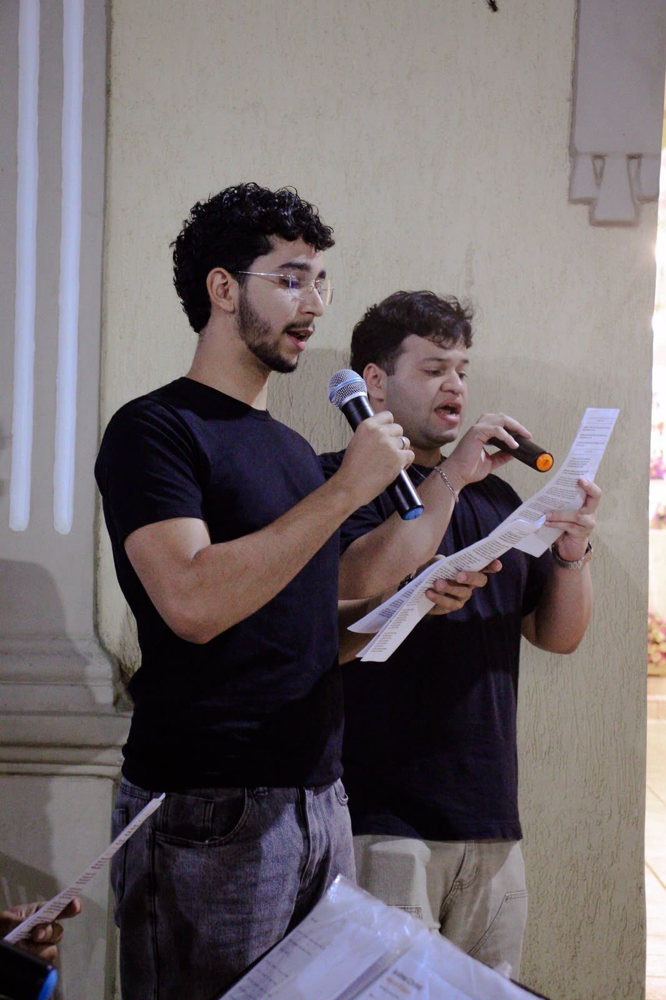
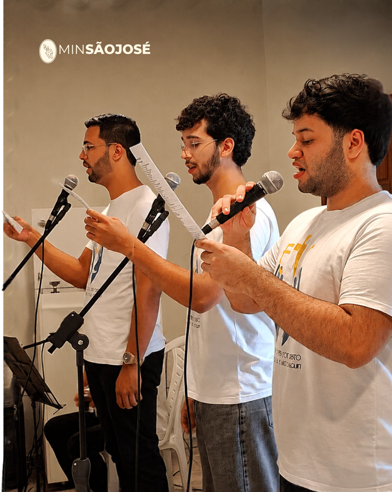

Conheça a história do MSJ
O Ministério São José é um grupo de vozes masculinas dedicado a servir à Igreja e a enriquecer a liturgia por meio do canto. Nascido em abril de 2025, o projeto surgiu do desejo profundo de fortalecer a presença e a participação masculina na música sacra local, trazendo beleza, solenidade, reverência e profunda devoção às celebrações eucarísticas. Unidos pela fé católica, pela fraternidade e pelo compromisso de servir ao altar, os integrantes dedicam seus talentos ao aperfeiçoamento vocal e espiritual. Mais do que executar cantos, o grupo busca transformar a música em uma verdadeira oração comunitária, conduzindo os fiéis a uma experiência mais profunda de encontro com o sagrado. Com simplicidade de coração, entrega sincera e união de propósitos, o Ministério São José cumpre sua missão de louvar a Deus, honrar o patrono da Igreja e colaborar para a dignidade do culto divino.

